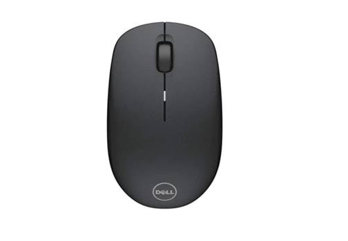

alert("hello friend");

Computer
definiation
A Computer is an electronic machine that takes input form a user,process the given input and generates output in the form of useful information.
A Computer accepts inputs in many forms such as data, programs and users reply.
Types of Computer
There are four type of computers
1. Super Computers
2. Main Frames
3. Mini Computers
4. Micro Computers

Mouse
The mouse is a computer input device used to move a cursor around a screen. The mouse buttons are used to interact with whatever
is being pointed at.
1. To hold the mouse correctly,you should:
2. Place your palm on the base of the mouse.
3. Put your thumb on the side of the mouse closest to the computer.
4. Put your Index finger on the left button.
5. put your middlie finger on the right button.
keyboard
A keyboard is one of the primary input devices used with a computer. Similar to an electric typewriter, a keyboard is composed of buttons used to create letters, numbers,
and symbols, and perform additional functions.The following sections provide more in-depth information and answers to some of the frequently asked questions about the keyboard.
1. Users can type the letters and numbers using the keyboard. Also, some special commands can be done using the keyboard.
Only with the keyboard, we can input data.
2. Most of the functions can be performed by a keyboard without the help of the mouse.
Function keys and control keys are used for special functions done by mouse.
3. Shortcut keys are used to access any files from the system so that mouse use can be avoided.
4. Control key and escape key can be used in most of the functions for various purposes.
Printer

A printer is a hardware output device that is used to generate hard copy and printany document .
A document can be of any type such as a text file, image,or the combination of both .
It accepts input command by users on a computer or on other device to print the documents.
How to set up a new printer
1.Plug in the printer's power cable and make sure it's turned on.
2. Connect the included cable (usually a USB cable) from the printer to the computer.
3. On your computer, locate the Printer settings.
4. Look for the option to Add a printer, then follow the instructions that appear.
Scanner

A scanner is a input device that scan a document such as photographs and pages of text.
How to set up a new scaner
1. Select Start > Settings > Devices > Printers & scanners or use the following button. Open the Printers & scanners settings.
2. Select Add a printer or scanner. Wait for it to find nearby scanners, then choose the one you want to use and select Add device.<